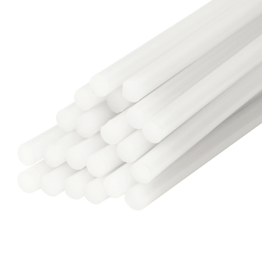
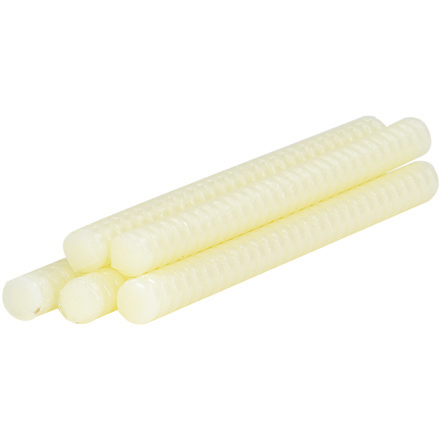
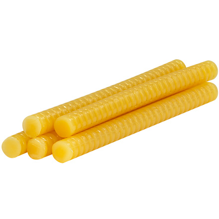

Available in:
Poly Gun LT Watts: 150 Melt Type: Low
Poly Gun TC Watts: 150 Melt Type: Hot
Volts: 120

Industrial Glue Sticks
Good general purpose characteristics. Bonds a broad range of materials.
Economical, general purpose glue sticks are great for every day uses like small repairs and crafts.
Available in:
1/2 x 15" Color: Clear Type: Hot 60 per case
1/2 x 15" Color: Clear Melt Type: Hot 300 per case
1/2 x 15" Color: Light Amber Melt Type: Hot 60 per case
1/2 x 15" Color: Light Amber Melt Type: Hot 300 per case
1/2 x 15" Color: Amber Melt Type: Hot 60 per case
1/2 x 15" Color: Amber Melt Type: Hot 300 per case

3M - Low-Melt Glue Sticks
Low-melt is applied at 265° F. to bond heat sensitive substrates such as polystyrene foam.
Excellent "hot-tack" when dispensed at low-melt temperatures.
Can bond expanded polystyrene, corrugated packaging and displays.
25 second bonding range.
FDA listed.
Available in:
5/8 x 8" Color: Light Tan Melt Type: Low 165 per case
5/8 x 8" Color: Clear Melt Type: Low 165 per case

3M™ - Hot-Melt Glue Sticks
Excellent "hot tack" properties for closing cartons and bonding corrugated.
Also used to put up signs and make P.O.P. displays.
Quick 25 second bonding range.
FDA listed.
Available in:
5/8 x 8" Color: Medium Tan Melt Type: Hot 165 per case
5/8 x 8" Color: Clear Melt Type: Hot 165 per case